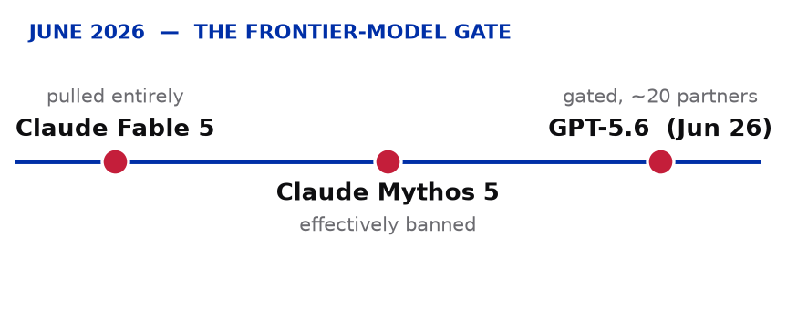
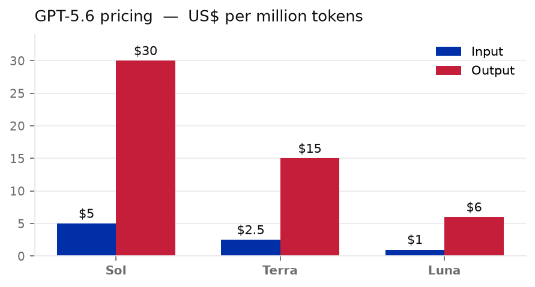
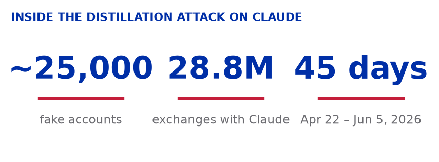

AI 情报日报
这一周，模型越强，围绕"谁能用、用谁的、谁来把关"的摩擦就越大。政府开始在发布端设闸，实验室指控对手偷师，大厂往下做芯片、往上做工具。而最有温度的信号来自福特车间——经验还没被算法追上。
OpenAI 发布 GPT-5.6 三款新模型，美国政府逐个客户审批发布
6 月 26 日，OpenAI 推出新一代模型 Sol、Terra、Luna，然后在同一天宣布：三款全部只开放给约 20 家公司，而且每接入一个新客户都要美国政府点头。按 OpenAI 自己的说法，这是应美国政府要求的短期措施。此前 Anthropic 的 Fable 5 因为被要求对所有外国国籍用户关闭，干脆整个下架。TechCrunch 把这种状态称为对前沿 AI 的"事实上的强制许可制"。

华盛顿的前沿模型闸门：继 Claude Fable 5、Mythos 5 之后，GPT-5.6 成为 6 月第三个被限制发布的模型。数据：TechCrunch / Axios。
- Sol 定价 $5/$30、Terra $2.5/$15、Luna $1/$6（每百万输入/输出 token）
- 新增 max reasoning effort 深度推理、ultra 子代理模式
- OpenAI 公开表态：不认为这种政府准入流程应该成为长期默认
- 预计下周扩容到更多公司，几周内逐步放开

GPT-5.6 三档定价（每百万 token、输入 vs 输出）：最强的 Sol 也是最贵的。数据：TechCrunch。
Axios / TechCrunch / Reuters · techcrunch.com
模型发布 / 政府准入 / 前沿许可制
两万五千个假账号，2880 万次对话：Anthropic 指控阿里巴巴"拄"走了 Claude
6 月 24 日，Anthropic 给美国参议员和政府写信，指控阿里巴巴旗下 Qwen 团队用近 25,000 个伪造账号，在 4 月 22 日到 6 月 5 日之间对 Claude 发起了 2880 万 次对话，试图蒸馏 Claude 的能力。被盯上的包括软件工程、智能体推理和长任务执行。Anthropic 一向禁止中国境内访问其产品——这些账号从一开始就是为绕过限制而设。消息一出，阿里巴巴股价跌到 16 个月低点。

Anthropic 口中"迄今规模最大的蒸馏攻击"：约 25,000 个假账号、2880 万次对话、跨度 45 天。数据：Business Insider / Bloomberg。
- 信由 Anthropic 政策负责人署名，寄给两位参议员
- 据称这场行动是在无视政府此前警告后进行的
- 多家媒体（CNBC、彭博、BBC）拿到了信件副本
CNBC / Bloomberg / BBC · bloomberg.com
模型安全 / 蒸馏攻击 / 地缘技术
AI 让硅谷高效、焦虑、不敢下线——"睡觉时一个 agent 替我看管其他 agent"
连续创业者 Matt Van Horn，四个孩子的父亲，从来不关笔记本电脑。他同时跑着半打 AI agent，每 10 分钟问他下一步做什么。孩子足球训练时开着，送孩子上学时开着，度假时开着。睡觉的时候，一个 agent 替他看管其他 agent。驱动他的不是效率，是 FOMO——AI 每天都在进步，我不在就可能被抛下。效率提升换来的是更长的工作时间，而不是更短的。
- Van Horn 用 Anthropic 的 Claude Code 同时跑 6 个 agent
- FOMO 成为新的加班动力：AI 在进步 → 我不能停下来
- 研究者发现：用 AI 省下来的时间，又被 AI 焦虑吃掉了
Bloomberg · bloomberg.com
人的代价 / AI 倦怠 / FOMO
AI 没顶上，福特把退休的"灰胡子"质检员请了回来
6 月 25 日，彭博报道福特一直在返聘约 350 名资深质量检验员——因为 AI 没能接住这活。这些被内部称为 "gray beard" 的老师傅，凭手感和经验抓得出 AI 漏检的毛病。一位高管直接说，有些判断目前还得靠人。背景是福特刚拿下 J.D. Power 一个 16 年来首次的头名，质量这根弦绷得很紧。
Bloomberg · bloomberg.com
人的代价 / 经验价值 / AI 替代
AI 打《文明 VI》：Claude 核平法国仍输，暴露感知与执行短板
6 月 28 日，英国前首相府数据科学家 Liam Wilkinson 用 76 个 MCP 工具将 Claude、GPT、Gemini 等四个模型放入《文明 VI》进行了 23 场对局。最大发现：AI 主动检查全局状态仅占 1-2%（感知盲区），计划后 10 回合内执行率仅 48-66%（知行差距）。结论是智力不是瓶颈，感知与执行才是。
- Claude 扮演葡萄牙时因法国文化胜利逼近，花 50 回合研发核弹核平图卢兹，但法国最终以外交胜利获胜
- Gemini 执行率最高（65.8%），Claude Opus 4.6 最低（48.2%）
- "比更聪明更迫切的问题：怎么让 AI 真正睁开眼、伸出手"
IT之家 · ithome.com
智能体评估 / 感知盲区 / 知行差距
xAI 就是一场彻底的灾难。所有 11 位联合创始人已全部离职，公司正在第三次重启。
Reid Hoffman · LinkedIn 联合创始人、Anthropic/OpenAI 投资人 · Fortune
过去 12 个月，生成式 AI 经济已创造了 1100 亿美元真实营收，增长速度是移动互联网的 3 倍。
Azeem Azhar · Exponential View 创始人 · Exponential View
Figma 在 Config 2026 上一口气发了 Motion、Shaders 和 Code Layers
6 月 24 日的 Config 2026 大会上，Figma 推出了动画工具 Motion、着色器 Shaders 和 Code Layers。Motion 把动效做进了设计稿，Code Layers 则继续模糊"设计"和"代码"之间那条线。对设计师，这是少往开发那边丢一次"请帮我实现一下"；对开发，是收到的稿子离能跑更近一点。
- 三件套：Motion（动效）、Shaders（着色器）、Code Layers
- 主题仍是把设计往可运行那头推
The Verge · theverge.com
设计工具 / AI 集成 / 开发效率
这周连起来看是一条线：
一：模型越强，闸门越紧。GPT-5.6 发布即受政府限制，Anthropic 告阿里巴巴蒸馏，前沿模型从"谁都能用"变成"谁批准用"。
二：AI 让人高效也让人不敢下线。FOMO 驱动加班——效率提升换来的是更长的工作时间而不是更短的。睡觉时一个 agent 替你看管其他 agent。
三：智能体撞上感知墙。《文明 VI》测试暴露 AI 的感知盲区和知行差距——跟模型大小无关，是架构问题。
四：经验还没被算法追上。福特返聘 350 名灰胡子质检员——有些判断目前还得靠干了 30 年的人。

白令海 · 解冻信号
碎冰漂浮在阿拉斯加圣劳伦斯岛周围，育空三角洲的彩色海水宣告着春天——从太空看，冰与水的边界正在一笔一笔地改写。